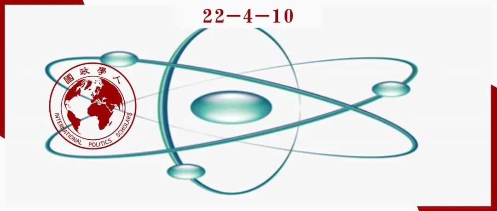
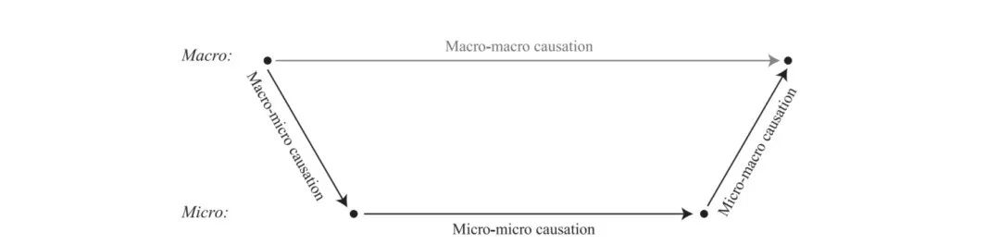
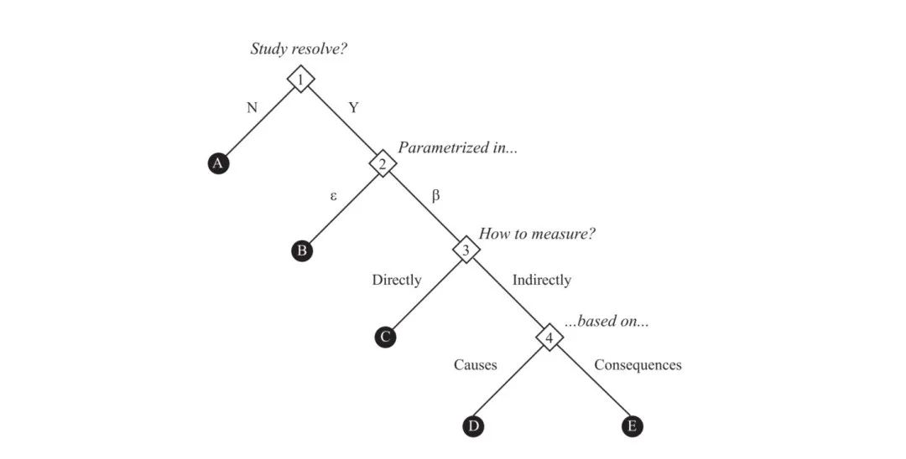

收录于合集

作品简介
作者： 约夏·科泽（Joshua D. Kertzer），哈佛大学政府学教授（Professor of Government，专门研究国际安全、对外政策和政治心理学，擅长定量和实验等研究方法。
编译： 阮镇炜（国政学人编译员，伦敦大学学院）
来源： Kertzer, J. (2017）Microfoundations in international relations. Conflict Management and Peace Science , 34(1), 81-97

导读
许多国际政治理论构建于微观基础之上。本文指出，在过去的二十年里，虽然国际关系学对“微观基础”的关注不断增长，但是这一概念尤为笼统，在关于“什么是微观基础”、“为何要研究微观基础”的问题上缺乏明确、具体的回答。本文指出微观层次的研究路径对于研究冲突的价值。 本文并不认为所有的国际关系理论都需要在微观层次进行深化或检验，而是认为很多国际关系理论本已构建于较低层次的机制之上，但这些微观机制要么没有被清晰地阐明，要么缺乏直接的检验。 在这种情况下，检验微观层次的互动并将其理论化会尤其有助于增强理论的解释力。作者以“决心”（resolve，国际安全研究中的核心解释变量之一）为例来阐述其观点。作者认为，国际关系学者难以检验“决心”是否能产生某些效应的原因之一是缺乏对“决心”的微观基础的研究。此外，作者简单描述了一种可用于研究无法观测的现象的“两段式”研究设计。
虽然作者在文中定义了“微观基础”，但是在其论述中似乎又显示出该定义的“灵活性”，这种“灵活性”也导致它并非那么“明确”，它与既有文献中的定义是相似的：“微观基础”可以理解为因果机制、理论假定，可以指个体的属性或行为（第一“意象”），也可以指国家层次的因素（第二“意象”）。尽管如此，作者提出对微观层次机制（尤其是理论假定）进行理论化或进行检验仍然是有意义的（当然，也有观点认为理论假定并不需要检验）。 作者也不像后结构主义者那样，只是单纯地对理论假定进行解构，而是提出需要进行检验。
宏观理论（三大理论及其变体）的研究很难再有新的突破，对于理论构建而言，微观层次的研究（尤其是与心理学的融合）却有很大的理论突破空间。但是微观理论（在沃尔兹看来是还原主义）能否有助于辨明国际格局等宏观变化，需要打上一个大大的问号。对于国际关系理论（而非对外政策理论，比如新古典现实主义）而言，其可以出现介于宏观和微观之间的中层理论，但微观和宏观之间似乎是难以弥合的（即较低层次的互动似乎难以解释较高层次的规律性结果）。然而，同一层次之间的理论弥合并非没有可能。
编译
01
“微观时刻”
长期以来，较高的分析层次主导着国际关系现象的研究，但如今国际关系学术研究已经转向对微观基础的研究。这一趋势的两个方面颇有意思。其一，则是对微观现象急剧增长的兴趣超越了方法论和认识论的分野：民意实验和调查研究的从业者总是认为他们的作品提供了微观基础，而热衷于把全球政治的日常互动理论化的建构主义者和批判理论家也持同样看法。其二，尽管国际关系学者频繁提及“微观基础”，但他们没有给出明确的定义，也没有以一致的方式去使用这一概念。在诸多文献中，“微观基础”被认为等同于因果机制或理论假定。总的来说， “微观基础”的定义和价值都被认为是不证自明的。
本文作者把“微观基础”定义为一种分析策略，即通过较低层次的互动去解释出现在较高层次上的结果。 这在某些方面与经济学和分析社会学（analytic sociology）对微观基础的认识是一致的。比如，在经济学研究中，有学者试图将宏观经济学还原至微观经济学；分析社会学研究则认为社会现象在理论上可以只通过个体变量去解释，比如个人的财产、目标、信仰和行为。作者借用社会学中阐述多层次解释的布东- 科尔曼模型（the Boudon-Coleman model）来解释其对“微观基础”的定义（图1）。与社会现象的纯粹宏观解释不同（图1梯形顶部的灰色通道），微观基础论点则是通过微观层次的互动去解释宏观社会现象（见图1黑色箭头所形成的底盆形状）。

图1
在这个意义上，微观基础路径依靠两个主要原则。 第一个原则是社会科学的机械观， 其认为社会研究不仅只是判断因果效应，还提供解释，通过定位结果产生的过程来“打开因果关系的黑箱”。因此，微观基础的研究涉及剖析塑造社会行为的具体细节（nuts and bolts）或塑造过程中的微观因素（cogs and wheels）。 第二个原则是在较低分析层次对这些机制进行分析。 政治科学和社会学中的许多微观基础研究倾向于把微观基础定位在个人层次。但与此同时，微观基础路径并不必然聚焦于“第一意象”（即个人层次）。比如，Renshon等人利用微观基础深入到神经系统层次（the neurological level）；Chaudoin等人通过微观基础去解释“第二意象”因素；经济学家则把公司层次的行为模型描述为以微观为基础的模型。如同关于分析层次的辩论一样，恰当地定位微观基础的分析层次取决于研究者提出的研究问题，而非教条般地坚持“科学的目标是追求在尽可能最低的分析层次上的解释”。
有关微观基础的论点并非没有反对者，而且“微观沙文主义”（microchauvinism）的怀疑论者提醒道：有时对微观基础的探索也许是有问题的。 正如图2顶部的灰色通道所表明，一些因果机制属于宏观层面——例如，经济学中的供给与需求——而多重可实现性（multiple realizability）意味着有很多宏观层次的现象不能简单地由微观层次的自变量去解释。国际关系学者对“预测”（forecasting）不断增长的兴趣为此提供了一个例子。在一场具有开创性的大规模地缘政治预测比赛中，Tetlock等人利用“群众的智慧”（wisdom of crowds）发现，如果运用极限化算法（extremizing algorithm）把概率估算归并，人们可以对世界事件作出准确的预测。这些研究结果对社会科学家而言无比重要，其对于理解理论也有显著意义。预测比赛中的每位参与者都有他们自己关于世界如何运转的潜理论（latent theory），这些理论表现在被观察或不被观察的某一事件中；算法把这些潜理论所产生的预测提取出来并将其集合在一起，但从不检验潜理论本身。 “群众的智慧”机制的前提——即通过黑箱化机制（blackboxing the mechanisms）可以得到更好的预测——与微观基础路径截然相反。 我们知道某件事很可能发生，但却不知道为何发生；归并（aggregation）排除了错误，但也排除了理论。
虽然国际关系学的某些领域的确对微观基础（或机械论解释）有所抗拒，但作者认为这种情况比我们实际上所看到的要少。许多有意避开微观层次分析的国际关系学术研究往往依靠微观层次的假定。虽然国际政治理论中的结构现实主义（尤其是沃尔兹的版本）经常反对微观层次的理论化，但是它们依赖于一系列特定的关于不确定性和恐惧所带来的行为后果的假定。这些行为后果即使是由全社会共同承担，但只会被个人所感知。
理性选择理论则是另外一个例子。与结构现实主义一样，国际关系学中的理性主义者倾向于强调：通过聚焦结构性特征而非行为体本身的特征，社会科学可以取得更大的进步。因此，理性选择理论经常被用于展示制度的力量，而不是用于深入研究行为体的特征。但与此同时， 理性主义模型往往也依赖于相对严密的微观层次的假定， 比如行为体在何处提取效用（utility），他们如何计算成本和收益，他们在不确定性之下如何作出判断等。从实证上验证这些经典的假定推动了许多开创性的研究议程，包括现在我们所说的行为经济学。许多对于理性选择的批判实际上是针对一系列特定的微观基础的批判。
一些学者通过区分工具理性（instrumental rationality）和程序理性（procedural rationality）来回应对于理性选择理论的批判。他们认为理性选择并非必然需要理性思想，由此，理性选择的效用并不取决于其微观层次的假定的合理性。但这个分析并没有削弱微观基础的重要性：越来越多的研究表明， 不仅是理论上的工具理性所需实践中的程序理性的程度，还是理性选择模型的传统程度，都依靠于一系列独特的心理特征。即使是比较传统的理性选择理论（相较于它的“行为学”变体而言），其终究具有心理学的微观基础。
学者并非要成为一个坚定的方法论个人主义者（methodological individualist）才能主张微观基础的重要性。例如，复杂性理论（complexity theory）建立在以下前提之上：我们不能只通过系统中各个组成部分的行为去解释整个系统，从而拒绝方法论个人主义，然而研究复杂性的国际关系学者经常使用基于施动者的建模（agent- based modeling）来展示施动者偏好和行为的参数如何决定新生的系统性质。 研究微观基础并不是去假定“所有的社会现象都可以单独从个人分析层次的角度去解释”，而是要承认许多宏观理论构筑在微观层次的假定之上。 微观基础路径的用处则是从理论上阐明这些假定或从实证上验证它们。
从这个角度看，微观基础路径有助于为应对国际关系研究中的两个挑战作出贡献。 其一，一些理论掩盖了使其起作用所必需的微观基础 ：这并不是说这些理论缺乏微观基础，而是说它们没有具体说明其微观基础是什么。随着研究的积累和学者们提出更多具体的机制，这一挑战通常通过理论发展来应对。 其二，我们的很多理论都有清晰表述的微观基础，但这些微观基础并没有被检验，或者只在宏观层次上被检验而导致生态学谬误（the ecological fallacy） 【译者注：生态学谬误，简单来说，即基于宏观汇总数据对微观个体数据做出错误的推断】。不同的理论有不同的假定。比如，胁迫（coercion）理论一般依托一系列特定的关于平民个人如何对威胁和暴力作出反应等微观层次的假定；贸易理论一般假定贸易偏好源于行为体的经济利益，这些利益要么基于要素禀赋（factor endowments），要么基于具体要素（specific factors）。直接从实证上检验这些假定可以丰富我们的理论，提高它们的解释力，并且使我们对规律（regularities）的解释更有信心。
02
“决心”作为潜变量
“决心”（resolve）作为一个案例有助于理解微观基础。“决心”是国际安全研究中最核心的解释变量之一，其被用于解释诸多现象：从国家为何赢得战争到它们何以在危机谈判中占据上风，从而阻止冲突爆发。然而，国际关系学者一直为检验关于决心作用的理论而感到头疼。最主要的困难是决心不能被直接观测。如果决心可以被直接观测，那么行为体就不会遇到表明决心方面的困难，由此，行为体将不会有误表决心的动机。在概念上，“决心”的不可观测性意味着我们可以将其视为“潜变量”（latent variable）。政治学者经常研究潜变量，比如性格倾向、政权类型、国家偏好的理想点模型（ideal point models of state preferences）等等，其逻辑是当一个概念不可直接观测时，我们可以通过其可观测的作用去建模。但是，决心则不一样，因为对于那些国际关系学者研究的相关问题而言，确立“决心”的作用效果恰恰是学者们的首要目标。决心与军事胜利之间的关系恰恰是学者们试图证明的经验研究问题。在这个意义上， “决心”不可观测的本质使学者在其理论中把解释力归于决心，这同时也阻碍学者们检验“决心”的解释效果（explanatory effects）。
这一挑战意味着当学者们用观测到的数据研究“决心”时，他们至少有五种实证策略可以采取（如图2所示）。首先，研究者当然可以一劳永逸地选择避免研究“决心”（图2选项A）。如果他们决定研究决心，问题则变成如何用参数表示“决心”。意识到“决心”的测量尤为困难，Sartori和Reed等学者则采取了选项B（见图2），把“决心”当成冲突发生与升级的统一模型（a unified model of conflict onset and escalation）中的一部分相关误差项（correlated error terms）。然而，将其视为误差项并不会有助于检验“决心”本身的作用，除非我们假定干扰中的相关性是确切地因为“决心”这个变量而不是其他遗漏变量造成的。

图2
因此，与其把“决心”视为误差项，许多国际关系学者把“决心”作为一个变量进行研究。接下来的问题则变成：直接测量决心（选项C）还是间接测量决心（选项D和选项E）？如果“决心”的确是一个潜变量，那么它就不能直接被观测，从而排除选项C。因此，大多数现有的战争实证研究采取了选项E，基于“决心”的假设后果来推断“决心”。比如，Rosen和Mueller基于各方愿意承受的伤亡来推断决心。
这一实证策略面临两个潜在问题。 其一，测量决心的某些指标可能变成“重言式”（tautology），即某些指标被用于解释结果，而这些同样的结果又用于推断“决心”。其二，正如Gelpi和Griesdorf所指出，“决心的展示”与“这种展示出现背后的根本偏好”之间存在重要区别。如果我们研究决心的作用（the effects of resolve），而不是决心信号的作用（the effects of signals of resolve），那么我们需要找到一种避免混淆这二者的实证策略。
处理该问题的一种方法则是采取选项D：研究者可以基于“决心”的原因（causes）而非其结果（consequences）去研究“决心”。然而，这样做要求我们具备相关理论，比如：决心来源于何处，以及为何某些国家比其他更有决心。换言之，这要求我们具备微观基础。
对于研究无法观测的现象，我们可以把微观基础看作适用于一般性的“两段式”研究策略。 在第一阶段，国际关系学者可以运用先验理论（priori theory）、形式模型（formal models）或实验方法（experimental methods）去探究现象背后的原因和微观过程（microprocesses）。在第二阶段，学者们可以利用可观测的数据（可以是在档案或者大样本中）去收集这些相同概念的量化指标，并利用它们建立对概念的复合的或潜在的量化。
作者在文中只是简单提及研究策略，但还有三个方法论问题值得深思。 第一，研究设计的初始阶段可以被认为是阐述理论逻辑或者确立经验规律（empirical regularities），这取决于研究目的是理论创立（theory building）（假设某个特定现象的微观基础）还是理论检验（theory testing）（验证既有文献中的微观基础假定）。实验方法在这方面特别有用，因为研究者可以直接控制所要研究的概念，并为其带来测量上的优势。第二，不管是关键影响指标模型（formative indicator model）还是布尔统计模型（Boolean statistical model）被用于研究设计的第二阶段，关键是要依靠多种指标，从而更加丰富研究者对概念背后的微观基础的理解，并且相较于使用单一的测量指标而言，增强研究者对其研究结果的信心。最后，多重方法的研究设计有助于在特定环境下进行实验，从而与观测性的或宏观汇总的工作互补，而不是取而代之。
03
撤离乌托邦
Holsti于1971年提出，国际关系领域正“撤离乌托邦”，因为国际关系学术研究从宏观（grand）走向了微观（granular），抛弃了战后对于“一般性的国际政治理论”的追求，并转向拥抱“避免高层次的一般性解释”的研究，而这些往往是分子般的、机械论的研究。然而，有观察家指出，在20世纪70年代末，这场撤退已经逆转。微观离场，宏观进场（Micro was out, and macro is in）。
不管是因为心理学和行为经济学的发展启发了对于许多新问题的兴趣，因果推断的发展带来了新的研究方法，抑或是因为目睹了结构性理论无法解释宏大且重要的事件后，对旧假定有了新的认识，国际关系学者似乎再次从乌托邦中撤离。
作者的观点是一般性的，而且是由问题驱动的： 并不是所有理论都需要微观基础才能令人满足，但大量国际关系理论都依靠隐含的且未被理论化的微观层次机制，或明确的但未被检验的微观层次机制。 对于某些问题——正如作者提出的关于“决心”的案例——坚实微观基础的缺失使研究者产生了各种各样的困惑。这些困惑所带来的问题正是系统性的微观层次的研究可以作出重要贡献的地方，无论是理论上的还是实证上的。
词汇积累
微观基础 microfoundation
决心 resolve
沙文主义 chauvinism
潜理论 latent theory
潜变量/隐变量 laten variable
工具理性 instrumental rationality
程序理性 procedural rationality
方法论个人主义/个人主义方法论
methodological individualism
生态学谬误 the ecological fallacy
要素禀赋 factor endowments
误差项 error term
重言式/同义反复 tautology
审校 | 张鸿儒 朱文菡
排版 | 彭凌懿 刘美彤
文章观点不代表本平台观点，本平台评译分享的文章均出于专业学习之用, 不以任何盈利为目的，内容主要呈现对原文的介绍，原文内容请通过各高校购买的数据库自行下载。

国政学人
支持学术公益与知识传播
微信扫一扫赞赏作者 __赞赏
已喜欢，对作者说句悄悄话
取消 __
发送给作者
发送
最多40字，当前共字
上一页 1/3 下一页
长按二维码向我转账
支持学术公益与知识传播
受苹果公司新规定影响，微信 iOS 版的赞赏功能被关闭，可通过二维码转账支持公众号。